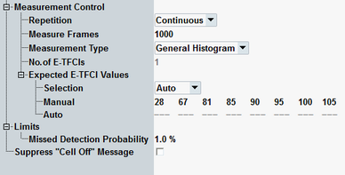

The "Measurement Control" parameters configure the scope of the measurement. A limit can also be defined. In addition, the "Cell Off" message display is configurable.
See also: "Statistical Settings"

Defines how often the measurement is repeated if it is not stopped explicitly or by a failed limit check.
- Continuous: The measurement is continued until it is explicitly terminated. The results are periodically updated.
- Single-Shot: The measurement is stopped after one statistics cycle.
Single-shot is preferable if only a single measurement result is required under fixed conditions, which is typical for remote-controlled measurements. Continuous mode is suitable for monitoring the evolution of the measurement results in time and observe how they depend on the measurement configuration, which is typically done in manual control. The reset/preset values therefore differ from each other.
Specifies the number of subframes to be measured per measurement cycle (statistics cycle).
Ideally, one E-TFCI value is detected per TTI, so the number of measure frames corresponds to the sum of the E-TFCI detections.
Remote command:Selects either the "General Histogram" or "Missed Detection" measurement type. Use "Missed Detection" for E-AGCH conformance tests.
Remote command:Displays the number of valid E-TFCI values in the table "Expected E-TFCI Values". The value equals the "Pattern Length" of absolute grant.
Configures the expected E-TFCI values for the "Measurement Type" = "Missed Detection".
The automatic calculation of expected E-TFCI values is related to the absolute grant (AG) pattern. Each AG value is mapped to an expected E-TFCI value, see "E-AGCH Settings".
Expected E-TFCI values can also be set manually. The values must correspond to the R&S CMW and the UE configuration.
Remote command:Defines an upper limit for the "Missed Detection Probability" result.
Remote command:Refer to "Suppress "Cell Off" Message".